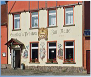

Webseite im Aufbau
Liebe Knautnaundorfer, Rehbacher und Hartmannsdorfer,
wir arbeiten derzeit intensiv an der Aktualisierung dieser Homepage. Stück für Stück werden hier alle wissenswerten Informationen für sie bereitgestellt, die unsere drei Leipziger Ortsteile betreffen.
Klicken Sie die einzelnen Menüpunkte auf der linken Seite an.
Wenn sie sich interessieren, über aktuelle Themen wie Elsterbrücke, Straßensanierung oder Walpurgisfeuer auf dem neuesten Stand zu bleiben, senden sie einfach eine kurze Mail. Wir werden sie in unseren Verteiler aufnehmen und zu gegebener Zeit Infos versenden.
E-Mail: info@ortschaftsrat-leipzig.de
Für Anregungen bezüglich des Inhalts dieser Webseite sowie weitere Hintergrundinformationen können sie sich ebenfalls an uns wenden.
Aktuelles - Bürgerforum & offene Diskussion

KEIN LIDL - UND WIE WEITER?19. Februar
|
 Erikenstraße 10, 04249 Leipzig |
ANDREAS NOWAK, Journalist und CDU-Wahlkreiskandidat zur Landtagswahl 2014 im Wahlkreis 29 Leipzig
im Gespräch mit
DR. SABINE HEYMANN, Stadträtin, stv. CDU-Fraktionsvorsitzende und Vorsitzende des Fachausschusses Stadtentwicklung und Bau im Stadtrat zu Leizpig
KARSTEN KLITSCHER, stv. Ortsvorsteher Hartmannsdorf-Knautnaundorf, CDU-Kandidat für die Ortschaftsratswahl und Stadtratswahl 2014
Alle interessierten Bürger sind herzlich zur Diskussion eingeladen!
Aktuelles - Wahlen
Im Mai 2014 sind Kommunalwahlen. In diesem Zug wird auch der Vorsitz des Ortschaftsates neu gewählt. Am selben Tag findet die Europawahl statt.
Wir werden sie zu gegebener Zeit über Neuigkeiten zur Wahl informieren.
Weitere Infos unter www.leipzig.de